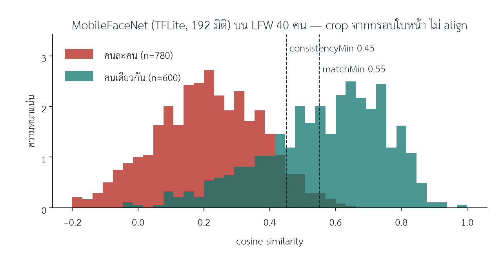
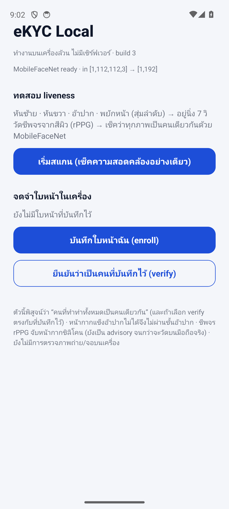
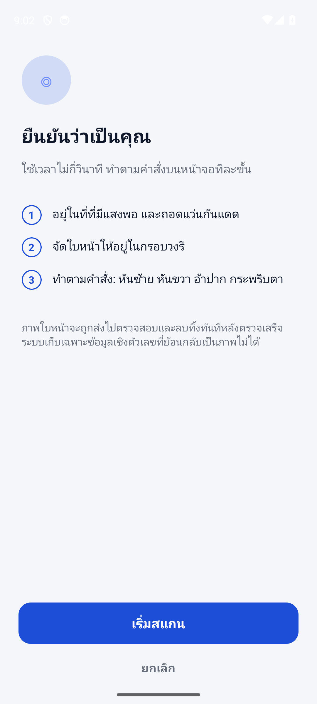
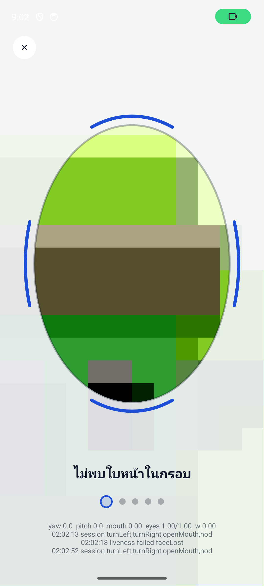
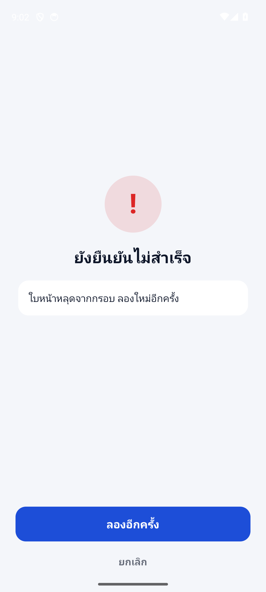

| ชื่อระบบ | eKYC Local (แพ็กเกจ @ekyc/react-native-ekyc-local และแอป apps/local) |
| เวอร์ชันเอกสาร | 1.0 |
| วันที่จัดทำ | 19 สิงหาคม 2569 |
| สถานะ | ฉบับส่งมอบเพื่อทดสอบภายใน (ไม่ใช่เอกสารรับรองมาตรฐาน) |
| แหล่งโค้ด | https://github.com/watcharaponthod-code/ekyc |
| ไฟล์ติดตั้ง | GitHub Releases ของโครงการ (ไฟล์ ekyc-local-*.apk) |
ระบบ eKYC Local เป็นส่วนประกอบ (module) สำหรับแอปพลิเคชัน React Native ที่ทำหน้าที่ตรวจสอบว่า บุคคลที่อยู่หน้ากล้องกำลังปฏิบัติตามคำสั่งจริงในขณะนั้น (หันซ้าย หันขวา อ้าปาก พยักหน้า) และ ใบหน้าที่ปรากฏในทุกท่าเป็นบุคคลเดียวกัน โดยการประมวลผลทั้งหมดเกิดขึ้นบนอุปกรณ์ ไม่มีการเชื่อมต่อเครือข่าย ไม่มีเซิร์ฟเวอร์ และไม่มีข้อมูลชีวมิติ (ภาพหรือแม่แบบใบหน้า) ออกจากเครื่อง
ระบบนี้จัดทำแยกจากระบบ eKYC แบบ client–server ของโครงการ (ซึ่งมีเซิร์ฟเวอร์เป็นผู้ตัดสิน) ตามข้อกำหนดที่ต้องการทางเลือกที่ทำงานได้เองทั้งหมดบนโทรศัพท์ ด้วยเทคโนโลยีคอมพิวเตอร์วิทัศน์ของ Google (ML Kit) และโมเดลจดจำใบหน้าขนาดเล็กที่ทำงานบนอุปกรณ์ได้ (MobileFaceNet)
| รายการ | สถานะ |
|---|---|
| การโค้ชผู้ใช้ให้อยู่ในกรอบ (ไกล/ใกล้/เยื้อง/หลายใบหน้า) | ครอบคลุม — ใช้กลไกเดียวกับระบบ client–server |
| คำสั่งท่าทาง: หันซ้าย หันขวา อ้าปาก พยักหน้า (สุ่มลำดับทุกครั้ง) | ครอบคลุม |
| การตรวจว่าทุกภาพเป็นบุคคลเดียวกัน | ครอบคลุม — MobileFaceNet เทียบทุกคู่ภาพ |
| การบันทึก/ยืนยันกับแม่แบบใบหน้าในเครื่อง | ครอบคลุม (ทางเลือก) |
| หน้ากากแข็ง (3D-print, resin, กระดาษ) | ครอบคลุมโดยอ้อม — คำสั่ง “อ้าปาก” ต้องผ่านภายในเวลาที่กำหนด หน้ากากแข็งอ้าขากรรไกรไม่ได้ |
| หน้ากากซิลิโคน / latex | มีการวัดชีพจรจากสีผิว (rPPG) หลังจบคำสั่ง — รายงานคะแนน แต่ยังไม่ตัดสิน (advisory) จนกว่าจะปรับเทียบบนโทรศัพท์จริง |
| การตรวจจับภาพถ่าย จอภาพ วิดีโอย้อนหลัง (2D PAD) | ไม่ครอบคลุม — ไม่มีโมเดล PAD 2 มิติบนอุปกรณ์ในรุ่นนี้ |
| การเชื่อมต่อเซิร์ฟเวอร์ การส่งข้อมูล การเก็บบันทึกกลาง | ไม่มีโดยเจตนา |
ระบบประกอบด้วยสามส่วนบนอุปกรณ์เดียว ดังรูปที่ 1
| องค์ประกอบ | เทคโนโลยี | บทบาท |
|---|---|---|
| กล้อง | react-native-vision-camera 5 | ภาพตัวอย่างและการจับภาพนิ่งจากพื้นผิวแสดงผล (ไม่มีความหน่วงชัตเตอร์) |
| ตรวจจับใบหน้า | Google ML Kit Face Detection ผ่าน react-native-vision-camera-face-detector 2 | มุมหัน (yaw) มุมก้ม (pitch) มุมเอียง (roll) ความน่าจะเป็นตาเปิด และเส้นขอบริมฝีปาก |
| กลไก liveness | @ekyc/react-native-ekyc (LivenessSession, Challenge, UI) | ลำดับคำสั่ง การถือท่า การเลือกจังหวะถ่ายภาพ ข้อความภาษาไทย/อังกฤษ |
| ฝังใบหน้า | MobileFaceNet (TensorFlow Lite, 5.2 MB) ผ่าน react-native-fast-tflite | เวกเตอร์ 192 มิติต่อภาพ |
| เตรียมภาพ | expo-image-manipulator + jpeg-js | ตัดกรอบ หมุนให้ตาอยู่ระดับ ย่อเป็น 112×112 พิกเซล ถอดรหัสเป็นพิกเซล |
| ที่เก็บแม่แบบ | expo-file-system (พื้นที่ส่วนตัวของแอป) | ไฟล์ JSON ตัวเลข 192 ค่า |
neutralตัวตรวจจับทำงานในโหมด fast พร้อม classification, landmarks และ contours ค่าที่ใช้ต่อเฟรม ได้แก่ จำนวนใบหน้า, yaw, pitch, roll, ความน่าจะเป็นตาซ้าย/ขวาเปิด, ความน่าจะเป็นยิ้ม, กรอบใบหน้า (normalised 0–1) และ ระดับการอ้าปาก ซึ่งคำนวณจากเส้นขอบ UPPER_LIP_BOTTOM และ LOWER_LIP_TOP เป็นอัตราส่วนช่องว่างต่อความกว้างปาก (ปิด ≈ 0, อ้าชัดเจน 0.3–0.6 ไม่ขึ้นกับระยะกล้อง) หากไม่มี contours จะใช้ระยะฐานจมูก–ใต้ปากต่อความกว้างปากเป็นตัวแทน (มีการทดสอบหน่วยครอบคลุมทั้งสองเส้นทาง)
เครื่องหมายทิศทางของ yaw/pitch ขึ้นกับอุปกรณ์ จึงออกแบบให้คำสั่ง “พยักหน้า” และการตรวจ “หันคนละทาง” ไม่ผูกกับเครื่องหมาย (ต้องหันครบทั้งซ้ายและขวาในเซสชันเดียวกัน)
| ไฟล์โมเดล | packages/react-native-ekyc-local/assets/mobile_face_net.tflite ขนาด 5,243,108 ไบต์ |
| เทนเซอร์เข้า | [1, 112, 112, 3] float32, ปรับค่าเป็น (พิกเซล − 127.5) / 128, ลำดับ RGB |
| เทนเซอร์ออก | [1, 192] float32 (ตรวจสอบด้วย LiteRT interpreter: ค่า norm ของเวกเตอร์ออก = 1.0) |
| การเตรียมภาพ | กรอบ ML Kit ขยาย 15 % → สี่เหลี่ยมจัตุรัสด้าน √2 เท่าเพื่อกันมุมดำเมื่อหมุน → หมุน −roll → ตัดกลาง → ย่อ 112×112 → JPEG q92 → ถอดรหัสด้วย jpeg-js |
| เวลาโดยประมาณ | 30–60 ms ต่อใบหน้าบนโทรศัพท์ระดับกลาง (แสดงจริงบนหน้าผลลัพธ์) |
| เกณฑ์ | ค่าเริ่มต้น | ความหมายและที่มา |
|---|---|---|
consistencyMin | 0.45 | ค่าคล้ายคลึงต่ำสุดในทุกคู่ภาพของเซสชันเดียวกัน จากการปรับเทียบบน LFW: คู่คนละคน 6.5 % ผ่านเกณฑ์นี้ ขณะที่ภาพในเซสชันเดียวกัน (แสงเดียวกัน ห่างกันไม่กี่วินาที) มีค่าสูงกว่าคู่ LFW ที่ต่างปี/ต่างมุมมาก |
matchMin | 0.55 | ค่าคล้ายคลึงระหว่างภาพ neutral กับแม่แบบที่บันทึกไว้ (ข้ามเซสชัน) เข้มกว่า: คู่คนละคนบน LFW ผ่าน 1.4 % |
| ท่าหัน | 18° | |yaw| บนโทรศัพท์ (ML Kit) |
| พยักหน้า | 15° | |pitch| |
| อ้าปาก | 0.30 | อัตราส่วนช่องว่างริมฝีปาก/ความกว้างปาก |
pulseRule / pulseMin / pulseMs | advisory / 0.5 / 7000 | ชั้น rPPG: advisory รายงานคะแนนโดยไม่ตัดสิน, enforce เพิ่มรหัส PULSE_ABSENT เมื่อคะแนน < pulseMin, off ข้ามขั้นตอน; คะแนน 0.5 = ความเด่นของยอด 7 dB (ปรับเทียบบนสัญญาณสังเคราะห์: แยกชัดเมื่อแอมพลิจูดชีพจร ≥ ~2× สัญญาณรบกวน) |
ค่าทั้งหมดปรับได้ผ่าน props ของ LocalLivenessCamera และควรวัดซ้ำกับกลุ่มผู้ใช้จริงก่อนใช้งานจริง (ดูหัวข้อ 6.2)
| ชุดทดสอบ | ผล | ครอบคลุม |
|---|---|---|
packages/react-native-ekyc-local (jest) | 29 ผ่าน / 29 | cosine, การปรับค่าพิกเซล, ถอดรหัส JPEG + base64, การหาคู่ที่แย่ที่สุด, การตัดสิน (สลับภาพ/คนละคน/แม่แบบอ้างอิง), การสุ่มลำดับท่า, NodChallenge, rPPG (สัญญาณจริง/หน้ากาก/drift/ภาพนิ่ง/fail-closed/8–30 fps), การอ่านสีบริเวณผิว |
packages/react-native-ekyc (jest) | 105 ผ่าน / 105 | LivenessSession, ทุก Challenge รวมอ้าปากและพยักหน้า, mouthOpenness จาก contours, ข้อความ UI ไทย/อังกฤษครบทุกรหัส |
| TypeScript typecheck | ผ่าน | ทั้งสองแพ็กเกจและแอป apps/local |
เพื่อยืนยันว่าโมเดล MobileFaceNet และขั้นตอนเตรียมภาพทำงานได้จริง ได้ทดสอบกับชุดข้อมูล LFW (Labeled Faces in the Wild) จำนวน 40 บุคคล ภาพละ 6 ภาพ โดยตัดกรอบใบหน้าจากตำแหน่งกลางภาพโดยไม่จัดแนว (สภาพที่ยากกว่าการใช้งานจริงซึ่งภาพมาจากเซสชันเดียวกัน)

| กลุ่ม | จำนวนคู่ | มัธยฐาน | p5 / p10 | p95 / p99 |
|---|---|---|---|---|
| คนเดียวกัน | 600 | 0.591 | 0.217 / 0.300 | — |
| คนละคน | 780 | 0.212 | — | 0.467 / 0.559 |
| เกณฑ์ | ปฏิเสธคนเดียวกัน (FRR) | รับคนละคน (FAR) |
|---|---|---|
| 0.40 | 19.0 % | 12.05 % |
| 0.45 (consistencyMin) | 25.5 % | 6.54 % |
| 0.50 | 33.7 % | 3.33 % |
| 0.55 (matchMin) | 43.5 % | 1.41 % |
| 0.60 | 51.0 % | 0.38 % |
หมายเหตุ: ค่า FRR บน LFW สูงเพราะคู่ภาพถ่ายต่างปี ต่างมุม ต่างกล้อง ในการใช้งานจริงภาพทั้งหมดถ่ายภายในเซสชันเดียวกันภายในไม่กี่วินาที ค่าคล้ายคลึงจึงสูงกว่านี้มาก ตัวเลขนี้จึงใช้เป็นขอบเขตล่างของสมรรถนะและใช้เลือกเกณฑ์ที่ปลอดภัยฝั่ง FAR




LOCAL_faceLost)ekyc-local-*.apk จากหน้า Releases ของ repoRelease ปัจจุบัน: local-v1.0.0-b3 (build 3) — ไฟล์ติดตั้งเซ็นด้วย debug keystore สำหรับการทดสอบ ก่อนแจกจ่ายจริงต้องเซ็นด้วยคีย์ของทีม ขนาดไฟล์ประมาณ 59 MB (arm64 เท่านั้น, เปิด ProGuard/shrinkResources) องค์ประกอบหลักคือโมเดล ML Kit ที่ฝังในตัว, TensorFlow Lite runtime, และ React Native/Hermes
| ลำดับ | กรณี | ผลที่คาดหวัง |
|---|---|---|
| 1 | ปิด Wi-Fi และข้อมูลมือถือ แล้วใช้งานทุกฟังก์ชัน | ทำงานได้ครบ ไม่มีข้อผิดพลาดเครือข่าย (พิสูจน์ว่า local 100 %) |
| 2 | “เริ่มสแกน” และทำท่าตามคำสั่งจนครบ | ผ่าน; consistency min โดยทั่วไป ≥ 0.6; ลำดับท่าต่างกันในแต่ละครั้ง |
| 3 | ให้บุคคลที่สองเข้ามาแทนในท่าที่ 2 หรือ 3 | ไม่ผ่าน; รหัส IDENTITY_INCONSISTENT; คู่ที่แย่ที่สุด (weakest) ชี้ไปที่ท่าที่ถูกสลับ |
| 4 | ไม่ทำท่า หรืออ้าปากไม่กว้าง | ขั้นตอนไม่ผ่านภายใน 12 วินาที; รหัส LOCAL_timeout |
| 5 | “บันทึกใบหน้าฉัน” แล้ว “ยืนยันว่าเป็นคนที่บันทึกไว้” ด้วยบุคคลเดิม | ผ่าน; match vs saved ≥ 0.55 |
| 6 | ยืนยันด้วยบุคคลอื่น | ไม่ผ่าน; รหัส NO_MATCH |
| 7 | ลบใบหน้าที่บันทึกไว้ แล้วกด verify | แจ้งให้บันทึกก่อน |
บันทึกค่า “consistency min”, “match vs saved” และเวลาที่แสดงบนหน้าผลลัพธ์ของทุกกรณี เพื่อใช้ปรับ consistencyMin/matchMin กับกลุ่มผู้ใช้จริง
npm install npm test # 105 + 16 tests cd apps/local npx expo prebuild --platform android cd android && ./gradlew assembleRelease -PreactNativeArchitectures=arm64-v8a
ekyc-local-template.json ในพื้นที่ส่วนตัวของแอป ไม่สามารถแปลงกลับเป็นภาพได้ ผู้ใช้ลบได้จากในแอป| ข้อจำกัด | แนวทางในรุ่นถัดไป |
|---|---|
| ไม่มีการตรวจสื่อปลอม 2 มิติ (ภาพถ่าย/จอ) บนอุปกรณ์ | เพิ่มโมเดล PAD ขนาดเล็ก (MiniFASNet 1.7 MB แปลงเป็น TFLite) และ/หรือ flash สีจากหน้าจอแบบเดียวกับระบบ server |
| rPPG ปรับเทียบบนสัญญาณสังเคราะห์ จึงเป็น advisory | เก็บคะแนนจากผู้ใช้จริง ≥ 30 คน และหน้ากาก แล้วตั้ง pulseMin และเปลี่ยนเป็น enforce |
| เกณฑ์ปรับเทียบจากชุดข้อมูลสาธารณะ ไม่ใช่กลุ่มผู้ใช้จริง | เก็บค่าจากหน้าผลลัพธ์ในการทดสอบภาคสนามแล้วปรับ |
| ยังไม่ได้ทดสอบบนอุปกรณ์จริงหลากรุ่นโดยผู้จัดทำ (ทดสอบผ่านชุดทดสอบอัตโนมัติ, typecheck และ emulator) | รอบทดสอบภาคสนามตามตารางที่ 7 |
| ขนาด APK ประมาณ 59 MB | เปลี่ยน ML Kit เป็นแบบดาวน์โหลดผ่าน Google Play services และตัด GPU delegate ของ TFLite |
| เซ็นด้วย debug keystore | สร้าง keystore ของทีมและตั้งค่าใน signingConfigs.release |
| รหัส | ความหมาย |
|---|---|
IDENTITY_INCONSISTENT | คู่ภาพที่แย่ที่สุดต่ำกว่า consistencyMin — บุคคลไม่ตรงกันระหว่างท่า |
NO_MATCH | ภาพ neutral ไม่ตรงกับแม่แบบที่บันทึกไว้ (โหมด verify) |
NO_FACE | ML Kit ไม่พบใบหน้าในภาพนิ่งบางภาพ |
FRAME_UNREADABLE | เตรียมภาพ/ฝังใบหน้าไม่สำเร็จ |
FRAME_MISSING | จำนวนภาพที่ประมวลผลได้น้อยกว่าจำนวนท่า |
PULSE_ABSENT | ไม่พบชีพจร (เฉพาะเมื่อ pulseRule='enforce') |
LOCAL_timeout / LOCAL_faceLost / LOCAL_multipleFaces / LOCAL_captureFailed / LOCAL_cancelled | ความล้มเหลวฝั่งการจับภาพก่อนถึงขั้นตัดสิน |
| ไฟล์ | เนื้อหา |
|---|---|
packages/react-native-ekyc-local/src/identity.ts | คณิตศาสตร์อัตลักษณ์ล้วน: cosine, preprocess, decodeJpeg, consistency, judge, เกณฑ์เริ่มต้น |
packages/react-native-ekyc-local/src/embedder.ts | โหลดโมเดล TFLite, ตัด/หมุน/ย่อภาพ, ฝังใบหน้า |
packages/react-native-ekyc-local/src/LocalLivenessCamera.tsx | หน้าจอจับภาพและการตัดสินบนเครื่อง |
packages/react-native-ekyc-local/src/challenges.ts | ชุดท่าและการสุ่มลำดับ |
packages/react-native-ekyc-local/src/pulse.ts, skin.ts | rPPG scorer (TypeScript) และการอ่านสีบริเวณหน้าผาก/แก้ม |
packages/react-native-ekyc/src/liveness/challenges.ts, mouth.ts | OpenMouthChallenge, NodChallenge, การวัดการอ้าปาก |
packages/react-native-ekyc-local/tests/ | ชุดทดสอบ 29 รายการ |
apps/local/ | แอป Expo สำหรับสร้าง APK (ธีมสว่าง เพื่อแยกจากแอปตัวอย่างระบบ server ที่เป็นธีมมืด) |